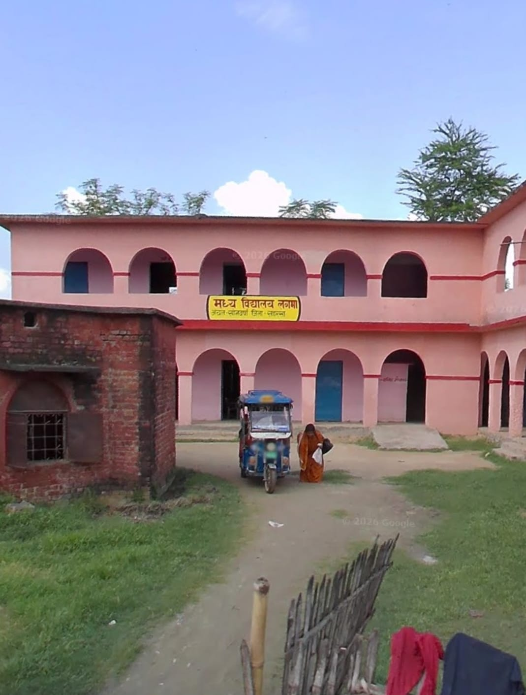
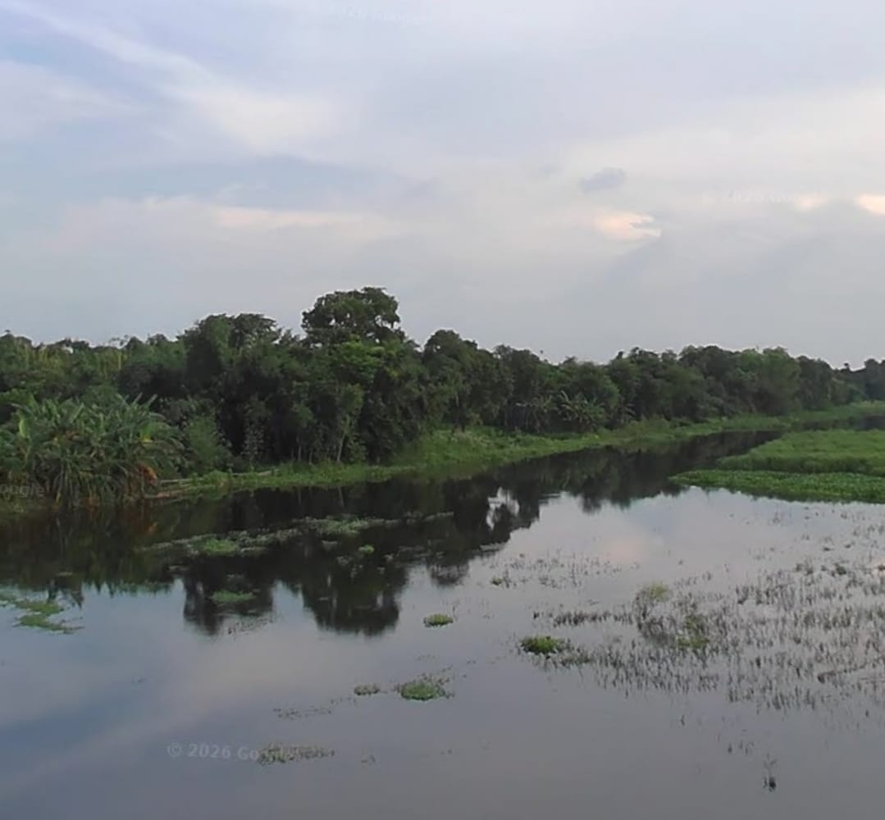
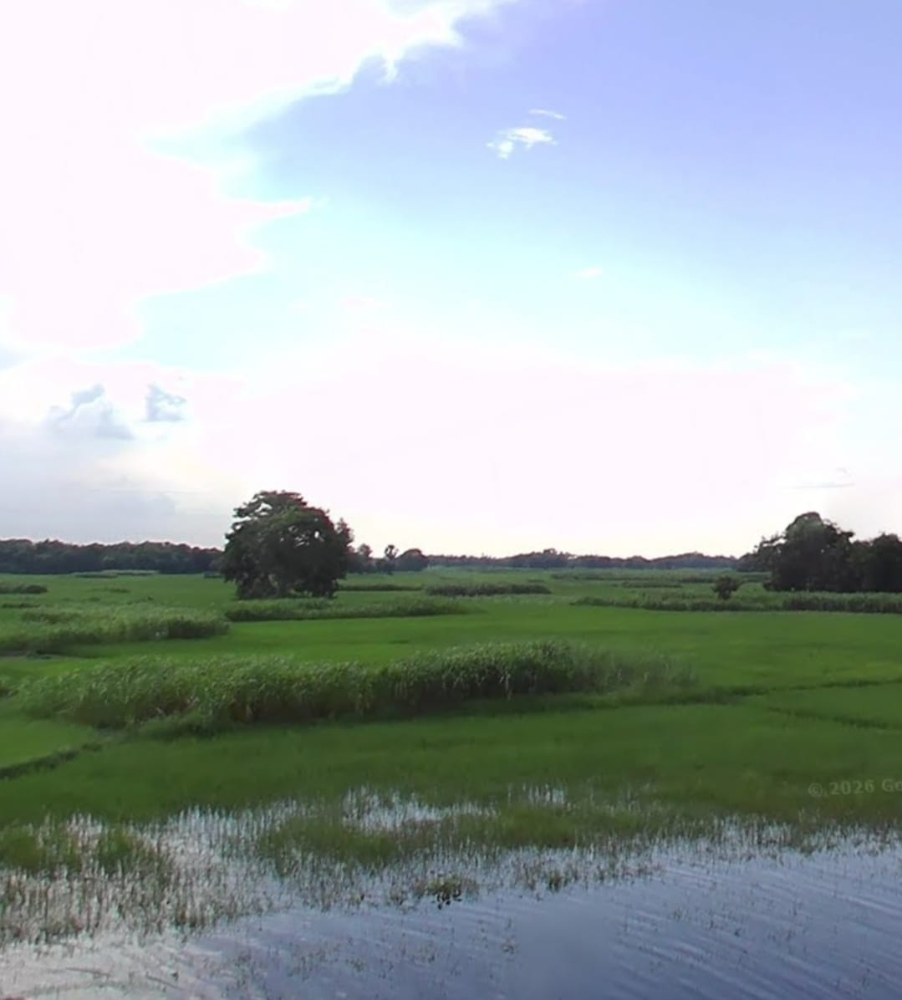
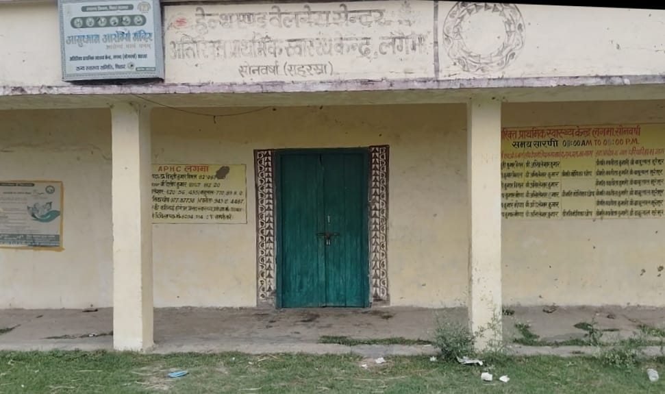
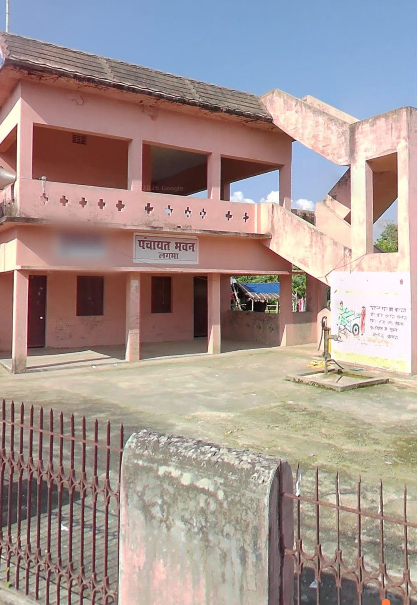

Middle School
Established in 1956 and located in Ward No. 7, Lagma.
Contact: Headmaster Office
Village facilities
Education, agriculture, local governance, markets, and community institutions help Lagma stay connected and active.

Established in 1956 and located in Ward No. 7, Lagma.
Contact: Headmaster Office
Temples and Brahm Sthan are central to spiritual and cultural life.
Contact: Temple Committee

Village ponds support fish farming, irrigation, and local livelihoods.
Contact: Local pond management groups

Farmers cultivate paddy, wheat, maize, mustard, and seasonal crops.
Contact: Local farmers

Primary medical support and nearby healthcare facilities are available.
Contact: ASHA / ANM workers
Local shops provide gas service and essential daily items.
Contact: 8877109792
Banking facilities are available through nearby branches and centers.
Contact: Concerned bank branch

Support for certificates, public schemes, and local governance.
Mukhiya: Priya Singh
Contact: 7762058999, avinashkumarsingh8575@gmail.com